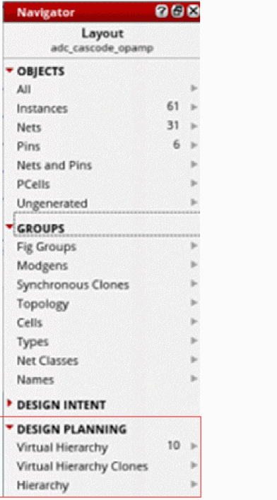

Virtual Hierarchy Data Sets in Navigator Assistant
In Virtuoso Layout Suite EXL, the Navigator assistant supports three additional data sets for displaying the generated virtual hierarchies and related components:
-
Virtual Hierarchy
See Accessing a Virtual Hierarchy. -
Virtual Hierarchy Clones
See Accessing a Virtual Hierarchy Clone. -
Hierarchy
See Accessing a Hierarchical Object.
Each of these predefined data sets, as displayed, is available under the DESIGN PLANNING category.

Return to top